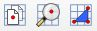

MGRS Plugin
MGRS provides zoom to and coordinate capture ability for MGRS coordinates separate from the Lat Lon Tools plugin. It was produced for users who want separate tools and to be able to have both MGRS and Lat Lon Tools windows displayed at the same time. If you need the ability to convert an attribute table with MGRS coordinates to a new point layer or convert a point layer to a new layer with an MGRS attribute string, then use Lat Lon Tools. These are the MGRS tools as shown on the MGRS toolbar.

-
 Copy/Display MGRS Coordinate - This captures MGRS coordinates onto the clipboard when the user clicks on the map. If snapping is enabled under QGIS Project->Snapping Options... menu, then Copy/Display MGRS Coordinate will snap to any close vector vertices according to the parameters set in the snapping options.
Copy/Display MGRS Coordinate - This captures MGRS coordinates onto the clipboard when the user clicks on the map. If snapping is enabled under QGIS Project->Snapping Options... menu, then Copy/Display MGRS Coordinate will snap to any close vector vertices according to the parameters set in the snapping options.
-
 Zoom to MGRS Coordinate - With this tool, type or paste an MGRS coordinate into the text area and press Enter. QGIS centers the map on the coordinate, highlights the location and creates a temporary marker at the location. The marker can be removed with the
Zoom to MGRS Coordinate - With this tool, type or paste an MGRS coordinate into the text area and press Enter. QGIS centers the map on the coordinate, highlights the location and creates a temporary marker at the location. The marker can be removed with the  button. The following shows the dockable zoom to dialog box.
button. The following shows the dockable zoom to dialog box.
Settings
These are the available settings that are available from the QGIS menu Plugins->MGRS->Settings
- MGRS precision - This determs the precision of the captured MGRS coordinate. It ranges from 0 to 5 with 5 being the highest resolution.
- Coordinate prefix - This text string is added to the beginning of the captured MGRS coordinate.
- Coordinate suffix - This text string is added to the end of the captured cMGRS oordinate.
- Use persistent zoom to marker - If this is checked, then when you zoom to an MGRS coordinate a persistent marker is displayed until you exit, zoom to another location, or click on the button.
- Show marker on QGIS map at the captured location - If checked, a temporary marker will be displayed at the location clicked on with the Copy/Display MGRS Coordinate tool.